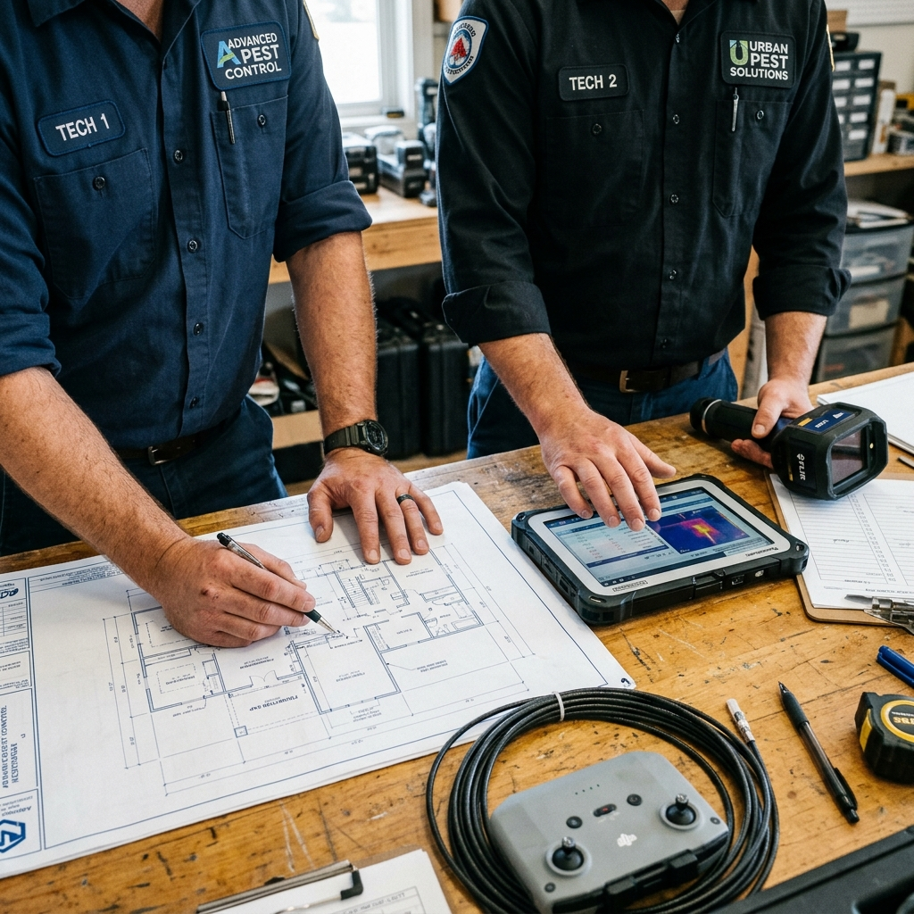
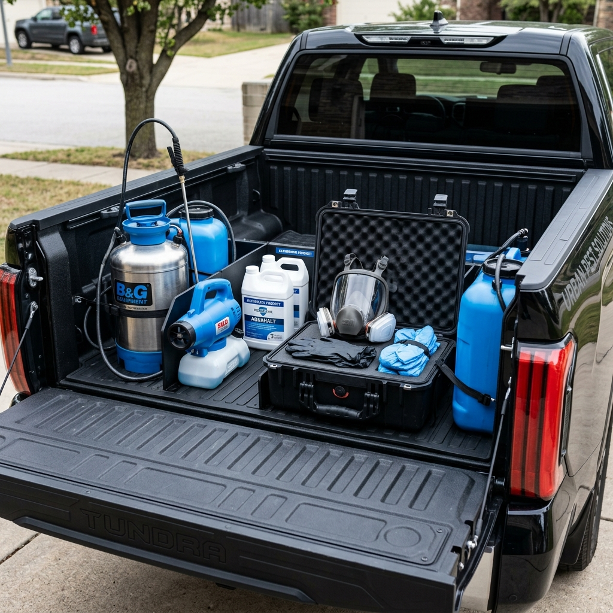

Control Científico de Plagas. Diagnóstico Primero.
En APEX no vendemos fumigaciones masivas. Diseñamos planes técnicos a medida basados en biología de especies y sanidad ambiental, priorizando la seguridad de las personas y el entorno.

Sanidad Ambiental con Enfoque de Ingeniería
APEX es una compañía de servicios sanitarios especializada en el manejo integrado de plagas (MIP). Nuestro equipo combina ingenieros agrónomos, biólogos y técnicos aplicadores certificados para ofrecer protección de alta precisión.
Diagnóstico Basado en Evidencia
Inspeccionamos minuciosamente el origen del problema antes de aplicar cualquier principio activo.
Responsabilidad Ecológica
Minimizamos la huella química aplicando productos de banda verde orientados únicamente a la plaga diana.
Enciclopedia y Gestión Integrada
Consulte información detallada y consejos preventivos sobre los agentes biológicos más comunes.
Cucarachas
Tratamientos localizados de alta adherencia sin desalojo de espacios.
Hormigas
Inoculación de cebos biológicos para el control de la reina y el hormiguero.
Arañas
Barreras residuales para arácnidos de importancia médica en depósitos y rincones.
Mosquitos
Termoniebla exterior combinada con larvicidas biológicos selectivos.
Roedores
Sistemas perimetrales de cebado seguro bajo norma industrial.
Avispas
Eliminación de panales mediante pulverizaciones dirigidas.
Protocolo de Control Integrado en 4 Etapas
Garantizamos el éxito de la intervención aplicando un proceso científico riguroso.
Inspección
Mapeo térmico, búsqueda de indicios físicos y detección de zonas de anidación y alimentación.
Diagnóstico
Identificación taxonómica de la especie, nivel de infestación y factores facilitadores.
Tratamiento
Aplicación de biocidas banda verde específicos e inocuos para superficies, personas y mascotas.
Monitoreo
Seguimiento continuo mediante estaciones testigo para evitar rebotes y garantizar el éxito.

Soluciones de Control Especializadas
Tratamiento Seguro para su Residencia
Protegemos su hogar empleando técnicas de mínima intervención química. Aplicamos principios localizados que eliminan la plaga sin alterar su rutina familiar ni poner en riesgo a niños o mascotas.
Higiene Ambiental para su Negocio
Mantenemos su local u oficina libre de vectores nocivos, cuidando la imagen de su negocio y asegurando la bioseguridad de sus empleados y clientes.
Manejo Integrado Industrial y Logístico
Diseñado especialmente para plantas procesadoras de alimentos, silos y centros de logística de gran tamaño. Cumplimos con auditorías exigentes y normas internacionales como BRC e IFS.
Estaciones de Monitoreo
La prevención física es el paso más efectivo. En zonas logísticas o exteriores de viviendas, la correcta colocación de estaciones de monitoreo impermeables permite identificar movimientos de roedores antes de que accedan a la estructura. Cumplimos estrictamente con la normativa local, asegurando cajas cerradas con llave imposibles de abrir por niños o mascotas.